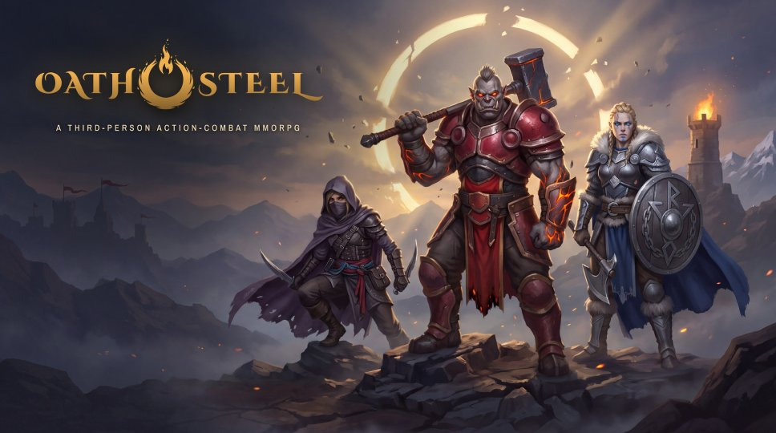

Senior Product Designer · AI-enabled Product Building
Ideas,
unfolded.
21 years designing digital products, from UX Lead at Deloitte Digital to co-founding Workchop. I set the direction, design the experience and direct AI to build it.
How I work
How I turn ideas into products
- 01
Explore & Research
Talk to the people involved, study the category and its competitors, and find the one question worth answering.
- 02
Define & Architect
Set the scope, the core flows and the information architecture, plus the data the product depends on.
- 03
Design & Prototype
Tokens and components first, then screens. Prototype the key flows and put them in front of people early.
- 04
Build with AI
I direct AI coding tools like Claude Code with clear specs, then review, test and correct every change. The decisions stay mine.
- 05
Test & Improve
Ship small, watch real use in PostHog and Sentry, and feed what I learn into the next round.
Selected work
Problems I solved, products I built

Raydr
01Every gig, club night and festival in Portugal, in one place.
Product, UX and AI-assisted build · raydr.live Read the case study
Oathsteel + Conjure
02A UE5 action-combat MMORPG, and Conjure, the workshop that takes its assets from idea to game-ready.
Product architecture, UX/UI and AI-assisted build · Vangward Read the case studyMercedes-Benz
03One application for the automotive supply chain, from manufacturing to final delivery.
UX strategy and product design · Deloitte Digital
Segurança Social
04The public face of Portugal's social security, designed for everyone who has to use it.
IA, UX and UI · WYgroup, 2018–2019
DailyGrasp
05A daily read designed to let you leave.
Product, UX and AI-assisted build · dailygrasp.app
Reshuffy
06Spotify playlist cleanup, safe by default.
Product, UX and AI-assisted build · reshuffy.com
WLM CRM + Captyon
07A campaign CRM built as a system, and a video editor for people with no editing experience.
UX and UI · WLM Media Group, 2019–2020About
From UX lead to product builder
For 21 years I've designed digital products. I care about how people think and decide, so my craft is interaction design, accessibility, design patterns and design systems.
About ten of those years were in consultancy, across retail, automotive, telecom, entertainment, finance and the public sector. Most recently I was UX Lead at Deloitte Digital, managing three designers on enterprise work for clients like Mercedes-Benz.
Today I co-run Workchop, a product studio. I set the direction, design the experience and direct AI to write the code, then test and ship. Raydr is live, Reshuffy is in beta, and DailyGrasp and Conjure, our game-asset workshop, are next.